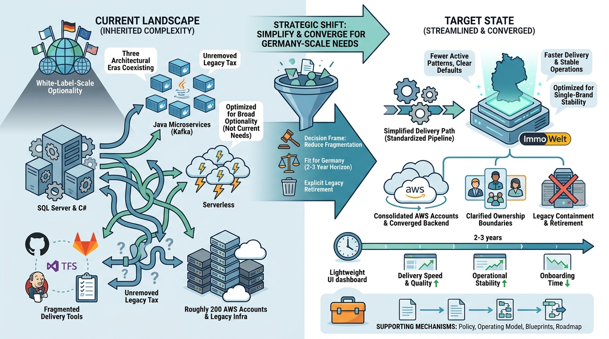

Strategy
Organization Tech Strategy: Reducing Fragmentation and Complexity While Building Foundation for the Future

Image generated by Google Gemini (gemini-3-pro-image-preview)
Strategy

Image generated by Google Gemini (gemini-3-pro-image-preview)